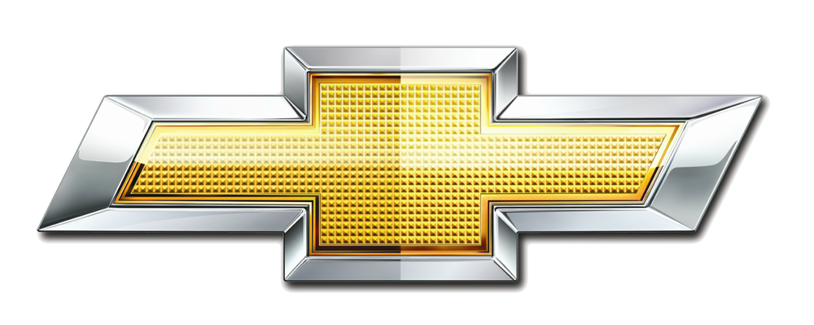

<label>Chevrolet Brasil
    Escritório do CEO
    Av. General Motors, 500
    São Caetano do Sul - SP
    Brasil
    
    04 de julho de 2023
    
    Caros admiradores da Chevrolet,
    
    É com grande entusiasmo e orgulho que compartilho com vocês uma notícia emocionante para a Chevrolet do Brasil. Hoje, anunciamos uma parceria estratégica inovadora com a renomada empresa Capelcar. Essa união representa um marco significativo em nossa busca contínua por excelência e liderança no mercado automotivo brasileiro.
    
    A Chevrolet sempre foi uma marca icônica e confiável, oferecendo uma gama de veículos emocionantes, duráveis e inovadores para nossos clientes. Nossa paixão por criar experiências de condução excepcionais e nossa dedicação à qualidade têm sido os pilares de nosso sucesso ao longo dos anos. Agora, com a parceria da Capelcar, estamos prontos para elevar ainda mais nossa presença e alcançar novos patamares de sucesso.
    
    A Capelcar é uma empresa respeitada e estabelecida no setor de compra e venda de carros, trazendo consigo uma expertise valiosa e um profundo conhecimento do mercado automotivo brasileiro. Com essa parceria estratégica, teremos a oportunidade de aproveitar essa experiência para ampliar nossas operações e fornecer aos nossos clientes uma experiência de compra e venda de carros excepcionalmente gratificante.
    
    Estamos empenhados em oferecer produtos de alta qualidade, serviços de primeira classe e uma experiência de cliente excepcional em todas as interações. Combinando a força da Chevrolet e a experiência da Capelcar, buscaremos inovar e aprimorar continuamente nossos processos, tornando-os mais convenientes e personalizados para atender às necessidades de nossos clientes em constante evolução.
    
    Além disso, tanto a Chevrolet quanto a Capelcar compartilham um compromisso com a responsabilidade social e ambiental. Juntos, trabalharemos para promover práticas sustentáveis e impulsionar soluções que contribuam para um futuro mais limpo e verde. Essa parceria nos permitirá unir esforços em prol de um mundo melhor, onde a mobilidade e a sustentabilidade caminham lado a lado.
    
    Agradeço a todos os envolvidos nesta parceria promissora. Com a força dessa união entre a Chevrolet e a Capelcar, estamos confiantes de que alcançaremos novos patamares de sucesso, reafirmando nosso compromisso de fornecer aos nossos clientes veículos excepcionais e experiências memoráveis.
    
    Vamos avançar juntos, impulsionados pela paixão pela inovação e determinação em moldar o futuro da mobilidade no Brasil!
    
    Com os melhores cumprimentos,
    
    [Carlos Zarlenga ]</label>